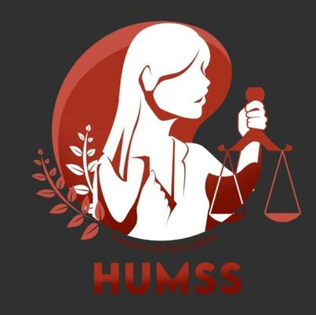

HUMSS
The HUMSS strand in senior high school is designed to effectively prepare students who seek to pursue a college degree in liberal education. HUMSS courses cover a variety of subjects, looking at the world and its people from various points of view. The learning activities are directed towards the development of critical thinking.
